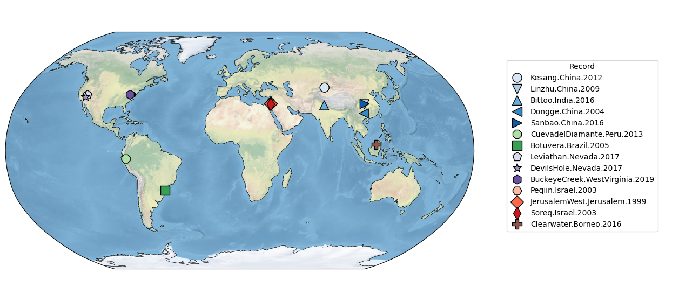

Mapping Data with Pyleoclim#
This notebook lays out the details of how we map data using Pyleoclim objects that we loaded in the Load Data notebook. We also save some objects that will be used for plotting consistency later on.
The notebook is structured as follows:
Group records into regions, as is done in the original publication
Create a map of these objects using Pyleoclim
Save markers and colors for later use
# Importing relevant packages
import pickle
import pyleoclim as pyleo
import seaborn as sns
# This file should have been created earlier by the user via the load_data notebook
with open("../../data/geo_ms_composite_dict.pkl", "rb") as handle:
geo_ms_composite_dict = pickle.load(handle)
Here we group our records into sub-regions, please see the original publication for info on how/why this was done if you’re interested:
# construct colormap
group_dict = {
"Mainland Asia": [
"Kesang.China.2012",
"Linzhu.China.2009",
"Bittoo.India.2016",
"Dongge.China.2004",
"Sanbao.China.2016",
],
"South America": ["CuevadelDiamante.Peru.2013", "Botuvera.Brazil.2005"],
"North America": [
"Leviathan.Nevada.2017",
"DevilsHole.Nevada.2017",
"BuckeyeCreek.WestVirginia.2019",
],
"Eastern Mediterranean": [
"Peqiin.Israel.2003",
"JerusalemWest.Jerusalem.1999",
"Soreq.Israel.2003",
],
"Southeast Asian Archipelago": ["Clearwater.Borneo.2016"],
}
cmap_grouped = {}
for key, records in group_dict.items():
if key == "Mainland Asia":
cmap = sns.color_palette("Blues", len(records))
elif key == "South America":
cmap = sns.color_palette("Greens", len(records))
elif key == "North America":
cmap = sns.color_palette("Purples", len(records))
elif key == "Eastern Mediterranean":
cmap = sns.color_palette("Reds", len(records))
# elif key == 'Southeast Asian Archipelago':
# cmap = sns.color_palette("Set1")
for i, record in enumerate(records):
if key == "Southeast Asian Archipelago":
cmap_grouped[record] = sns.color_palette("tab10", 10)[5]
else:
cmap_grouped[record] = cmap[i]
Now we establish the plotting order to be used throughout the rest of the notebooks, and use a MultipleGeoSeries object to map the records:
plot_order = [
"Kesang.China.2012",
"Linzhu.China.2009",
"Bittoo.India.2016",
"Dongge.China.2004",
"Sanbao.China.2016",
"CuevadelDiamante.Peru.2013",
"Botuvera.Brazil.2005",
"Leviathan.Nevada.2017",
"DevilsHole.Nevada.2017",
"BuckeyeCreek.WestVirginia.2019",
"Peqiin.Israel.2003",
"JerusalemWest.Jerusalem.1999",
"Soreq.Israel.2003",
"Clearwater.Borneo.2016",
]
geo_ms_composite_dict = {key: geo_ms_composite_dict[key] for key in plot_order}
geo_ms_composites = pyleo.MultipleGeoSeries(list(geo_ms_composite_dict.values()))
fig, ax = geo_ms_composites.map(
projection="Robinson",
proj_default={"central_longitude": 10},
scatter_kwargs={
"s": 150,
},
hue="label",
hue_mapping=cmap_grouped,
legend=True,
marker="label",
)
legend_handles = ax["map"].get_legend_handles_labels()
cmap = {}
marker_dict = {}
for idx, handle in enumerate(legend_handles[0]):
cmap[legend_handles[1][idx]] = handle._color
marker_dict[legend_handles[1][idx]] = handle._marker
ax["map"].legend(loc="center right", bbox_to_anchor=(1.4, 0.52), title="Record")
ax["leg"].legend().remove()

with open("../../data/cmap_grouped.pkl", "wb") as handle:
pickle.dump(cmap, handle)
with open("../../data/marker_dict.pkl", "wb") as handle:
pickle.dump(marker_dict, handle)